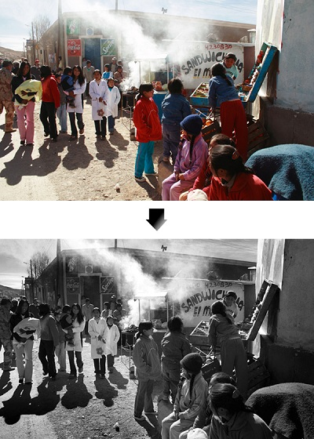

Digital photography has done a lot of great things for us. It's made film unnecessary, which means that individual shots no longer cost anything and you are now free to take as many pictures as you want
without fear of wasted film. A related benefit is that you no longer need to choose a specific film to put in your camera--if you want to shoot at a higher ISO there's no need to go out and purchase that high ISO
film--instead, you just select the correct ISO in your camera's settings. And the same is true for black and white vs. color. If your camera allows it, you can switch back and forth between black and white on the
fly, or you can do as many conversions as you like in post-processing. But there are still some things you need to remember to ensure that your digital black and white images are as beautiful as the black
and white film photos taken decades ago.
In the very early days of photography, of course, everyone shot in black and white--because that was the only film technology available. Today you have a choice, so why limit yourself to one or the other? Black
and white photos are often seen as "timeless," and many photographers and viewers tend to think of them more artistic than their more popular color counterparts. A black and white image has a surreal and
almost dreamlike quality, too; it looks cleaner and has greater depth than a color image. At the very least, black and white is worth experimenting with, since it can give even the most devout color
photographer a better eye for lines, patterns, contrast and texture.
The best monochrome conversions are made by editing raw files which have the full colour information, but if you shoot raw and JPEG files simultaneously and set the camera to its monochrome Picture Style/Picture Control/Film Simulation mode you get an indication of how the image will look in black and white.
As many photographers struggle to visualise a scene in black and white, these monochrome modes are an invaluable tool that will help with composition and scene assessment.
Many cameras are also capable of producing decent in-camera monochrome images these days and it’s worth experimenting with image parameters (usually contrast, sharpness, filter effects and toning) to find a look that you like.
Because compact system cameras and compact cameras show the scene seen by the sensor with camera settings applied, users of these cameras are able to preview the monochrome image in the electronic viewfinder or on rear screen before taking the shot.
DSLR users can also do this if they activate their camera’s live view system, but the usually slower responses mean that many will find it preferable or check the image on the screen post-capture.
The complimentary and opposing colours that bring a colour image to life are all reduced to black and white or shades of grey in a monochrome image and you have to look for tonal contrast to make a shot stand out.
In colour photography, for example, your eye would immediately be drawn to a red object on a green background, but in monochrome photography these two areas are likely to have the same brightness, so the image looks flat and dull straight from the camera.
Fortunately, it’s possible to work adjust the brightness of these two colours separately to introduce some contrast. However, a good starting point is to look for scenes with tonal contrast.
There are always exceptions, but as a general rule look for scenes that contain some strong blacks and whites.
This can be achieved by the light or by the brightness (or tone) of the objects in the scene as well as the exposure settings that you use. The brightness of the bark of a silver birch tree for example, could inject some contrast (and interest) in to a woodland scene.
Setting the exposure for these brighter areas also makes the shadows darker, so the highlights stand out even more. Look for shapes, patterns and textures in a scene and move around to find the best composition.
Long exposure shots can work really well in monochrome photography, especially where there’s moving water or clouds.
During the exposure the highlights of the water, for example, are recorded across a wider area than they would with a short exposure and this can help enhance tonal contrast.
The blurring of the movement also adds textural contrast with any solid objects in the frame. If necessary, use a neutral density filter such as Lee Filters’ Big Stopper or Little Stopper to reduce exposure and extend shutter speed (by 10 and 4 stops respectively).
Naturally, when exposures extend beyond about 1/60 sec a tripod is required to keep the camera still and avoid blurring. It’s also advisable to use a remote release and mirror lock-up to minimise vibration and produce super-sharp images.
Graduated neutral density (AKA ND grad) and polarizing filters are just as useful in monochrome photography as they are in colour. In fact, because they manipulate image contrast they are arguably more useful.
An ND grad is helpful when you want to retain detail in a bright sky while a polarizing filter can be used to reduce reflections and boost contrast. Alternatively, consider taking two or more shots with different exposures to create a high dynamic range (HDR) composite.
Don’t be afraid to use a ND grad with a standard neural density filter if the sky is brighter than the foreground in a long exposure shot.
Coloured filters, which are an essential tool for monochrome film photographers, can also be useful for manipulating contrast in digital images.
They work by darkening objects of their opposite colour while lightening objects of their own. An orange filter, for example, will darken the blue of the sky while a green one will lighten foliage.
Although coloured filters can still be used to manipulate contrast when shooting digital black and white images, it’s more common to save this work until the processing stage.
Until a few years ago Photoshop’s Channel Mixer was the preferred means of turning colour images monochrome, but now Adobe Camera Raw has more powerful tools (in the HSL/Grayscale tab) that allow you to adjust the brightness of eight individual colours that make up the image.
It’s possible to adjust one of these colours to make it anything from white to black with the sliding control.
However, it’s important to keep an eye on the whole image when adjusting a particular colour as subtle gradations can become unnatural looking.
And adjusting the brightness of a red or pink shirt with the red sliding control, for instance, will have an impact on the model’s skin, especially the lips.
The Levels and Curves controls can also be used to manipulate tonal range and contrast, but the HSL/Grayscale controls allow you to create separation between objects of the same brightness but with different colours.
Dodging and burning is a technique that comes from the traditional darkroom and is usually used to burn in or darken highlights and hold back (brighten) shadows.
Photoshop’s Dodge and Burn tools allow a level of control that film photographers could only dream of because you can target the highlights, shadows or mid-tones with both.
This means that you can use the Burn tool to darken highlights when they are too bright, or the Dodge tool to brighten them to increase local contrast.
It’s a great way of giving a sense of greater sharpness and enhancing texture.
Plus, because you can set the opacity of the tools, you can build up their effect gradually so the impact is subtle and there are no hard edges.
From an artistic viewpoint; color depicts reality. Black and white is an interpretation of reality.
The key to successful black and white photography is learning to see the world in monochrome. It's important to understand that not all subjects are suitable for black and white. There are certain types of photo that rely on colour for impact. Think of Steve McCurry's famous Afghan Girl portrait, for example. The rich colours are an intrinsic part of the image's power.
The successful black and photographer recognizes this, and searches out subject matter that looks better in black and white.
As you're evaluating your subject, try and imagine how it will look in black and white. Pre-visualise the result after you've post-processed (or developed and printed if you use film) the image using your favourite techniques, such as adding textures and toning. With practice, your vision will become very accurate.
A good tip for digital SLR users is to shoot in the RAW format (which you should do for the best quality colour to black and white conversions anyway) but set the Picture Style (this is Canon's term - check your instruction manual if you have another brand of camera) to a black and white mode. The photo will be displayed in black and white on the camera's LCD screen, and you'll have all the colour information in the RAW file for your conversion afterwards.
To help you learn to see in black and white, we've included both colour and black and white photos in all our examples.
Imagine the wall of an old building, or rusty metal, or weathered wood. Anything old normally has lots of texture, and textures look great in black and white.
Texture is affected by the lighting conditions. Low raking light, typical of the golden hour of light near sunrise and sunset, makes texture stand out sharply. The soft light of an overcast day can also bring out texture, though it may need some help in post processing by techniques such as increasing contrast.
The worse light for photographing texture is harsh midday light. The flatness of this type of light hides texture.
This photo of a statue has beautiful texture. The light was very soft, so I increased the contrast using the curves tool in Photoshop CS to bring out the texture.
We're used to seeing in colour. When colours are converted to black and white, they become shades of grey. Light colours become highlights, and dark colours become dark tones. The differences between these shades is called tonal contrast.
Black and white photographers utilise tonal contrast to make good photos.
Shape and form are two very important visual elements. Every object has both shape and form. Shape is how the subject looks in two dimensions. A silhouette, like this photo of tree branches, is an example of shape in a photo.
Form is how the subject looks in three dimensions. Photos are two dimensional, and like painters, photographers have the challenge of depicting three dimensional objects (their subjects) in a two dimensional form (the photo).
Black and white draws attention to the shadows and flowing lines that depict form. Use lighting to make your subject look three dimensional. Side lighting reveals form by casting shadows. Front and backlighting obscure it.
The word photography derives from the ancient Greek for 'painting with light'. Photography is light, and the quality of the light determines the quality of the photo.
Black and white gives the photographer freedom to take photos in all sorts of lighting conditions. The best light is still created by the sun when it's low in the sky. But with black and white you can also take photos during the middle of the day and on overcast days, which are difficult lighting conditions for colour photography.
The secret is to make sure the light suits the subject. Midday light, for example, can be great for architecture but poor for portraiture. An overcast day is ideal for taking portraits, but poor for landscapes.
There are certain subjects that are ideal for black and white photography:
Without colour, attention is focused on the eyes and face, and the textures of the subject's clothes. Sepia toned photos, such as the one below, are very flattering and often used by commercial portrait studios.
Elderly people, with wrinkled and time worn skin, are wonderful subjects for black and white. The above photo is of an elderly indigenous lady in Bolivia. Her weathered skin and hat, modelled on the style of helmets worn by the Spanish conquerors, make an evocative and timeless portrait.
Both of these portraits were taken outside on cloudy days. This type of light is very flattering for portraits. Direct sunlight creates harsh, ugly shadows across the face, and should be avoided.
Black and white is a very effective medium for landscape photography. It draws attention to the shapes and forms of the components within the landscape, and the quality of light.This photo, taken on the Bolivian altiplano, is reduced to a series of shapes and blocks of light and dark tones in black and white.
Our towns and cities are full of modern architecture constructed from metal and glass. Look for the shapes these buildings make against the sky.
Old buildings have beautiful weathered surfaces full of texture. Ancient castles, cathedrals and churches also make great subjects. The photo above was taken in Oxford, England. The university's 'dreaming spires' reach into the sky.

Travel photography is about capturing the memory and emotion of a place that you've visited. Black and white photos have a timelessness that is suitable for travel
Black and white works well for all sorts of still lifes. Without colour, the emphasis is on the shapes and forms of the subject, and the quality of the lighting.
Nudes are recognised as one of the oldest subjects for artists and photographers. Black and white nudes are timeless, and by removing colour, help elevate the subject matter from something that is potentially smutty by treating the naked body as an art form.